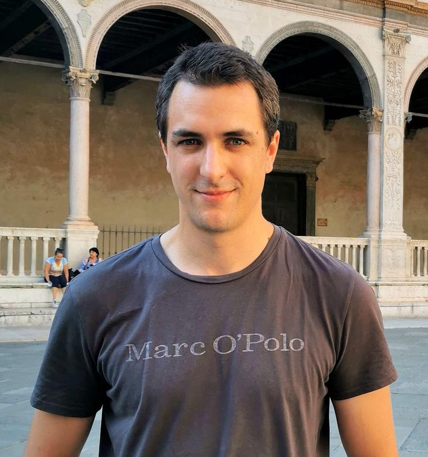
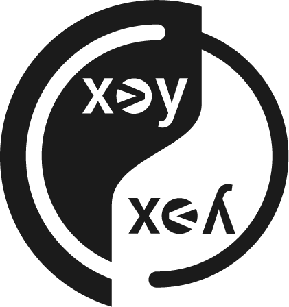

|  |
Dominik WintererPh.D. Student |
About
Dominik Winterer is a fourth-year Ph.D. student at ETH Zurich advised by Prof. Zhendong Su and a member of the AST lab since March 2019. He is interested in formal methods problems in Programming Languages and Software Engineering. Before his Ph.D. studies, Dominik did research in Automated Planning. In 2018, Dominik received an MSc. in computer science from the University of Freiburg (Germany). In the summer of 2017, Dominik interned at IBM Research NY, where he worked on top-k planning. Currently, Dominik's primary research goal is to make SMT solvers more robust, reliable, and performant through principled, general automated testing techniques with a potential to be applicable beyond SMT solvers. His tools have found 1,500+ bugs in the flagship SMT solvers Z3 and CVC5; 400+ are critical soundness bugs. Dominik is the organizer of the Future of Software Seminar at ETH Zurich.News
Sep '6 Invited to serve on the program committee of MET2023 collocated with ICSE
Sep '2 I'll be giving a talk at KIT's research seminar on formal methods
Aug '26 Our work on Finding Incompleteness Bugs in SMT solver got accepted at ASE '22. Congrats Mauro!
Jun '22 Invited to visit Paderborn University and give a talk
May '22 Invited to the Program Committee of SYNASC 2022
Apr '22 We won an Amazon Research Award for Project YinYang for SMT Solver Testing!
Apr '22 Invited to the Heidelberg Laureate Forum!
Mar '22 Invited to the Dagstuhl seminar on Research methods in Software Engineering
Feb '22 I will be organizing the Future of Software Seminar at ETH
Research
|  |
Project Yin-Yang for SMT Solver Testing.
Satisfiability Modulo Theory (SMT) solvers are foundational tools for many subareas of computer science, including formal verification, programming languages, and software engineering. Their reliability and robustness are crucial, especially for the safety-critical domains. However, effectively validating SMT solvers has been a longstanding challenge. The goal of Project Yin-Yang is to develop novel, effective, practical methods and techniques to help make SMT solvers more reliable, powerful, and usable.
[Reports: YinYang, OpFuzz,TypeFuzz, Janus] 
|
Selected Publications (all)
Finding and Understanding Incompleteness Bugs in SMT Solvers
Mauro Bringolf, Dominik Winterer, Zhendong Su
In Proceedings of ASE 2022 [slides / tool]
Generative Type-Aware Mutation for Testing SMT Solvers


Jiwon Park*, Dominik Winterer*, Chengyu Zhang, Zhendong Su
In Proceedings of SPLASH/OOPSLA 2021 [slides / video abstract]
* Both authors contributed equally.On the Unusual Effectiveness of Type-Aware Mutations for Testing SMT Solvers
Dominik Winterer*, Chengyu Zhang*, Zhendong Su
In Proceedings of SPLASH/OOPSLA 2020 [slides / video abstract]
* Both authors contributed equally.Validating SMT Solvers via Semantic Fusion
Dominik Winterer*, Chengyu Zhang*, Zhendong Su
In Proceedings of PLDI 2020 [slides / video abstract]
* Both authors contributed equally.
Distinguished Paper AwardInvited to TOPLAS special issue on PLDI '20
Supervised Students
Jiwon Park (Bachelor thesis + Internship, completed) → Ph.D. student @UC Berkeley
- 2nd place@FSE '21 SRC
- Co-first author of OOPSLA '21 paper
Mauro Bringolf (Master thesis, completed) → Software Engineer @University of St. Gallen
- First author of ASE'22 paper
Dylan J Wolff (Master thesis, completed) → Ph.D. student @National University of Singapore
- POPL '21 SRC paper
Altin Alickaj (Practical work, completed)
Awards and Grants
Heidelberg Laureate Forum 2022
Google Open Source Peers Bonus 2021 (for yinyang)
Invited to TOPLAS special issue on PLDI '20
IJCAI '16 Travel Grant Award
Selected Talks
Finding 1,700+ Bugs in the SMT Solvers Z3 and CVC5 in Three Years. (invited talk)
@USC Software Seminar. Nov 2022.Finding 1,700+ Bugs in the SMT Solvers Z3 and CVC5.
@KIT Research Seminar Formal Methods, Host: Mattias Ulbrich. Sep 2022.Finding 1,500+ Bugs in the SMT Solvers Z3 and CVC5. (invited talk)
@Paderborn University, Host: Eric Bodden. Jun 2022.Finding 1,000+ Bugs in the SMT solvers Z3 and CVC4. (invited talk)
@CEA List at Paris Saclay virtual, Host: Michaël Marcozzi. Feb 2021.
Service
Program Committee of the ICSE 2024 (Demonstrations Track)
Program Committee Member: AAAI '20, AAAI '21, SYNASC '22, MET '23
Reviewer/Judge Student Research Competition: OOPSLA '21
Artifact Evaluation Committee Member: ISSTA '21, POPL '21, PLDI '22
SIGPLAN-M Longterm mentoring (Oct '21 - now)
Teaching
@ETH Zurich
Formal Methods and Functional Programming, Spring 2022
Software Engineering, Spring 2021 (Head TA)
Data Modelling and Databases, Spring 2020
Research Topics in Software Engineering, Spring 2020, 2021, 2022, Fall 2020
Compiler Design, Fall 2019, 2020, 2021 (Head TA)
@University of Konstanz
Decision Procedures, Fall 2018
Software Engineering, Fall 2018
@University of Freiburg
Model Checking, Fall 2016
Theoretical Computer Science, Fall 2016